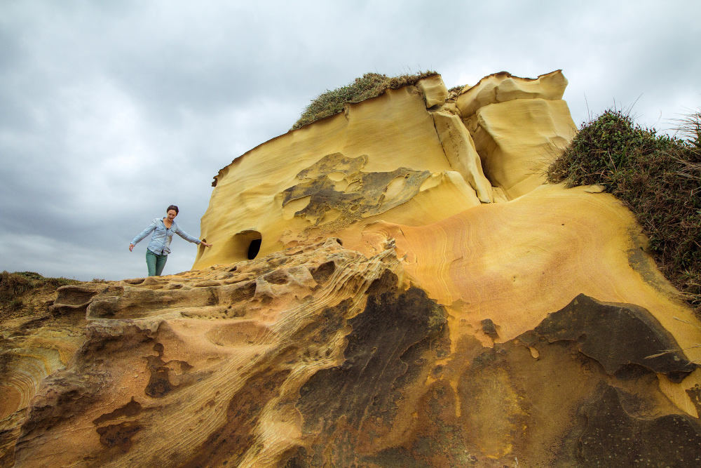

Events
March 24: “The Taiwanese Table: Cuisine & Identity,” a discussion and tasting at WNYC The Greene Space, New York, NY. Tickets and more details.
March 25: The Food of Taiwan book launch party at Threes Brewing, Brooklyn, NY. 7pm, Free. More details.
March 29: Taiwanese pop-up dinner at Jimmy’s No. 43, New York, NY. Tickets and more details.
March 31: “Cooking Your Culture” panel discussion with local authors at PowerHouse Books, Brooklyn, NY. 7pm, Free.
April 4: Book signing and discussion at Book Passage, San Francisco, CA. 12:30pm, Free. More details.
April 6: Taiwanese pop-up dinner at Namu Gaji, San Francisco, CA. Tickets and more details.
More to come!
